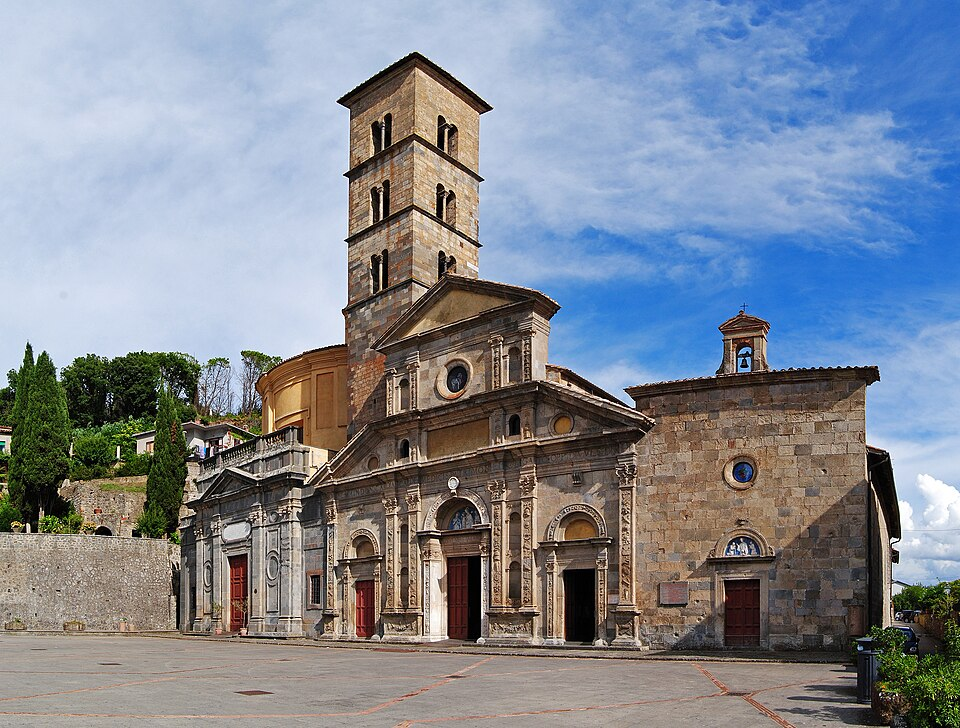
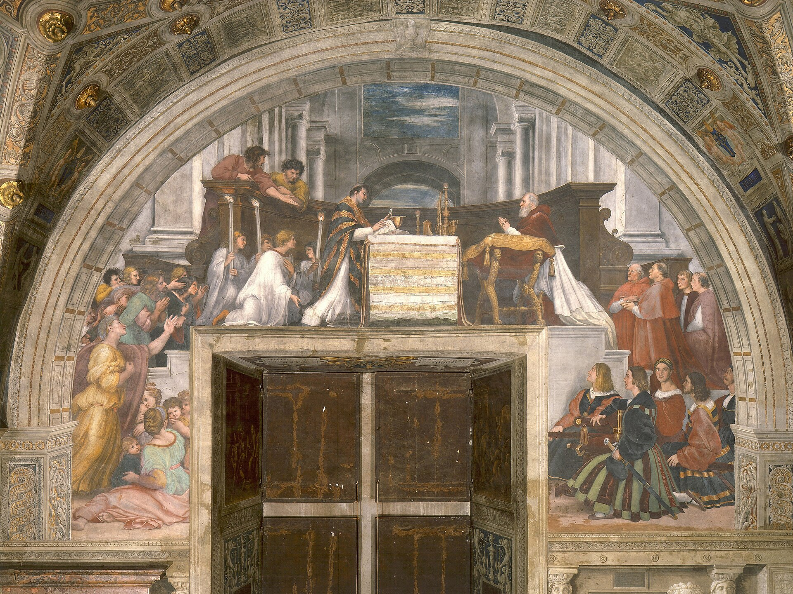

Terreno: una lunga discesa dal masso di Radicofani, poi campagna ondulata mentre esci dalla Toscana ed entri nel Lazio, sopra il Paglia e avanti attraverso Acquapendente e San Lorenzo Nuovo fino al grande lago-cratere azzurro di Bolsena. Distanza e dislivello sono misurati dalla traccia GPS del giorno.8
Oggi attraversi un confine. Regione nuova, fiume nuovo, lago nuovo — e, se glielo permetti, un cuore rinnovato. La speranza non è ottimismo sul tempo che farà; è la certezza teologale che il bene verso cui pedali è stato promesso, e che Colui che l'ha promesso è fedele.
Chiunque beve di quest'acqua avrà di nuovo sete; ma chi berrà dell'acqua che io gli darò, non avrà più sete in eterno. Anzi, l'acqua che io gli darò diventerà in lui una sorgente d'acqua che zampilla per la vita eterna.
Giovanni 4,13–14 · versione CEI 20081
Agostino traccia una linea sottile e liberante. La fede, dice, può riguardare qualsiasi cosa — il passato, il presente, il futuro, cose accadute ad altri, faccende che non ti toccano affatto. Ma la speranza ha tre condizioni rigorose, e vale la pena portarle con sé oggi. La speranza riguarda sempre e solo ciò che è bene: non puoi sperare un male, solo temerlo. La speranza riguarda sempre e solo ciò che è futuro: non puoi sperare ciò che già possiedi. E la speranza riguarda sempre e solo ciò che concerne te: non è virtù da spettatore ma da viandante. Vale a dire — la speranza ha esattamente la forma di un pellegrinaggio. Un bene, ancora davanti, che è davvero tuo da raggiungere.
Oggi lasci la Toscana. Alle tue spalle, sul suo masso nero, sta Radicofani, ricordato per un fuorilegge — un monumento a un passato che non può essere cambiato. Davanti a te c'è l'acqua: il Paglia da guadare, e poi l'enorme occhio calmo del Lago di Bolsena, che colma fino all'orlo un antico vulcano. È l'immagine giusta verso cui pedalare. Ieri si trattava di memoria, che guarda indietro; oggi si tratta di speranza, che guarda avanti — e il perno tra le due è un'acqua che non si esaurisce mai. «Una sorgente che zampilla per la vita eterna», dice Gesù alla donna venuta al pozzo con una brocca vuota e una sete che credeva soltanto fisica.
È la differenza tra una cisterna e una sorgente, e vale la pena sapere su quale delle due è costruita la tua speranza. Una cisterna trattiene ciò che vi hai versato; quando l'estate è lunga, viene meno, e ti ritrovi a raschiare il fondo delle tue risorse. Una sorgente è alimentata da altrove, sottoterra, fuori dal tuo controllo e oltre la tua gestione, e non dipende affatto da te. La speranza cristiana è alimentata da una sorgente. Non funziona a seconda di come stanno le gambe al chilometro quaranta, o dell'umore in cima alla salita. Funziona su una promessa fatta da un Altro. Pedala verso l'acqua.
La mia speranza, oggi, è una cisterna — che attinge ansiosa alle proprie riserve — o una sorgente, alimentata da una promessa che non ho fatto io e non posso esaurire?
Il percorso di oggi, da Radicofani a Bolsena. Mappa © CyclOSM / OpenStreetMap. Profilo altimetrico completo e tutte le tappe →
Giù dalla discesa attraversi il Paglia e, con esso, l'antica frontiera: la Toscana alle spalle, il Lazio — la terra di Roma — davanti. Il primo paese sull'altra sponda è Acquapendente, la cui cattedrale risale al 1149 e che la tradizione dei pellegrini segna come la prima tappa in Italia nei viaggi di san Rocco, patrono dei pellegrini e degli appestati.7 Poi il paese papale di fondazione San Lorenzo Nuovo, e la strada scende verso il lago.

Foto: Sidvics (CC BY-SA 3.0) · Wikimedia Commons
Sul finire della notte egli andò verso di loro camminando sul mare… Pietro allora gli rispose: «Signore, se sei tu, comandami di venire verso di te sulle acque». Ed egli disse: «Vieni!». Pietro scese dalla barca, si mise a camminare sulle acque e andò verso Gesù. Ma, vedendo che il vento era forte, s'impaurì e, cominciando ad affondare, gridò: «Signore, salvami!». E subito Gesù tese la mano, lo afferrò e gli disse: «Uomo di poca fede, perché hai dubitato?».
Matteo 14,25.28–31 · versione CEI 20082
È una storia di lago, e oggi finisci accanto a uno, perciò sia questa la tua meditazione. I discepoli faticano ai remi nel buio, il vento contro, e poi proprio ciò che dovrebbe terrorizzarli — una figura che cammina sull'acqua — si rivela essere la loro salvezza. La speranza spesso arriva travestita da ciò che temiamo. E Pietro, gloriosamente, d'impulso, fa la cosa più piena di speranza di tutti i Vangeli: chiede di essere lasciato uscire dalla barca.
Nota che cosa davvero lo tiene su. Non è il suo coraggio, che è reale ma breve. Non è la sua abilità, perché non c'è tecnica per camminare sull'acqua. Non è nemmeno la sua fede, considerata come una quantità che possiede — perché la fede gli viene meno a metà traversata, e giù va. Ciò che tiene su Pietro è una Persona, e una mano. Cammina finché guarda Cristo; affonda nell'istante in cui guarda il vento. Le onde non cambiarono. Il vento non peggiorò. Egli semplicemente spostò l'attenzione da Colui che lo aveva chiamato al pericolo tutt'intorno — e quello spostamento degli occhi fu tutto il suo affondare.
C'è un sacerdote nella storia di questa città che dubitò — che non riusciva a credere che Cristo fosse davvero presente sotto l'apparenza del pane comune — e il cui dubbio, dice la tradizione, fu risposto non con un ragionamento ma con il sangue. Pietro, che affonda, fa l'unica cosa rimasta a chi sta annegando: tre parole, «Signore, salvami», e subito — Matteo dice subito — la mano è là. La speranza non è l'assenza della sensazione di affondare. La speranza è sapere di chi è la mano che ti afferra quando affondi.
Ma via via che si avanza nella vita monastica e nella fede, con il cuore dilatato si corre nella via dei comandamenti di Dio con indicibile dolcezza d'amore; così che, non allontanandoci mai dal suo magistero e perseverando nella sua dottrina fino alla morte, partecipiamo con la pazienza alle sofferenze di Cristo e meritiamo di essere coeredi con lui del suo regno.
San Benedetto, Regola, Prologo4
Al sesto giorno, il tuo corpo capisce questa frase meglio di quanto la capisse al Giorno 1. Benedetto descrive esattamente ciò che stai provando. All'inizio, la via dei comandamenti di Dio è tutta strettezza e fatica — la strada è «angusta», dice poche righe prima, e i principi lo sono sempre. Ma egli promette che qualcosa cambia strada facendo: il cuore si dilata, si allarga, la fatica diventa gioia, e ti ritrovi non più a trascinarti nei comandamenti ma a correrli, «con indicibile dolcezza d'amore». È la speranza del pellegrino in una sola immagine. La strada non si accorcia. Sei tu a diventare più grande.
E nota quanto è onesto sul meccanismo: questa speranza vive di perseveranza. Altrove nella Regola, tra i suoi strumenti dell'arte spirituale, Benedetto ne elenca uno che appartiene proprio a questo giorno: «non disperare mai della misericordia di Dio».4 Lo mette per ultimo, di proposito, come lo strumento a cui ricorri quando tutti gli altri hanno fallito — l'ultimo rifiuto di rinunciare alla grazia. Ecco perché il monaco è il grande maestro della speranza: non perché si aspetti una strada facile, ma perché ha fatto voto di stabilità, la promessa di perseverare in un solo luogo, attraverso le stagioni aride, finché la sorgente non si ritrova. Pietro affondò perché si fermò; il monaco corre perché si rifiuta di fermarsi.
Ieri notte hai dormito su una fortezza e stanotte dormi accanto a un lago, in una città il cui intero significato è che Cristo è realmente, corporalmente, con speranza presente — anche, e soprattutto, per chi dubita. Domani la strada si volge decisamente verso Roma, e qualcosa in te comincerà a protendersi in avanti, a fiutare la fine del viaggio. Quel protendersi è speranza, e Benedetto lo benedice: corri nella via con il cuore dilatato. Solo — non correre per sfuggire alla strada. Corri perché la dolcezza ha finalmente raggiunto la fatica.
Ogni citazione è riportata dall'edizione indicata; le affermazioni storiche derivano dai riferimenti qui sotto. Le citazioni dei Padri sono rese in italiano per questo breviario a partire dalle edizioni critiche indicate.